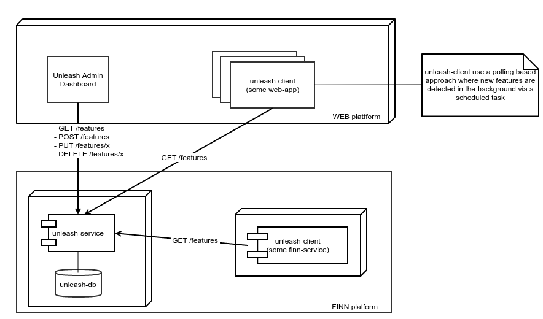

layout: true <div class="theme"> <img src="images/codeoslo2015.png" style="width: 100px;" /> </div> --- class: center, middle, inverse # Unleash your features gradually .small.leftify[ _At FINN.no we are 140 developers deploying code to production multiple times a day. We have a few web applications and a few hundred running micro-services in production and integrate code in production even before new features are ready for the end user. And when the feature is complete we gradually roll out the new feature to our end users. This allows us to verify the performance of the new feature and that it actually solves the user problem it targets. In this talk I will briefly introduce the feature toggle technique in general and how this allows us to separate deploy and release of new features. I will also introduce Unleash, an open source feature toggle system, we developed to solve this issue._] #### Ivar Conradi Østhus <br /> Lead Developer <br /> FINN.no <table class="bottom"> <tr> <td class="rightify"><img src="images/twitter.png" height="20" /></td> <td class="leftify strong">@ivarconr</td> </tr> <tr> <td class="rightify"><img src="images/finn.png" height="20" /></td> <td class="leftify strong">ico@finn.no</td> </tr> </table> --- class: background-img # master-branch == highway to production <img src="images/highway.jpg"> .img-src[https://www.flickr.com/photos/ar88/4102692617/] .box[ - **~140 developers** - **~385 deployable** projects - **~650 artifacts** deployed weekly (prod) ] ??? - In FINN -> treat master branch as highway to production. - Everything we check in to master: - Will be built and integration test executed - Will be deployed to test-environments - Intgration tests will be executed - And new code will be ready to be deployed to production (We have a custom built pipeline system to manage all this.) --- class: middle, center, inverse # The master highway works well for <br /> small changes! ??? - bugfixes - minor adjustments --- # ...but not all changes are small - **Some features requires more effort to be built** - days, weeks, months to be completed - multiple teams - multiple applications/services - **Unfinished features should not be exposed to end users!** --- # Feature branches <img class="fullwitdh border" src="images/feature_branch_simple.jpg" /> ??? - The traditional way to isolate new code - A seperate branch for every new features - New code will not hit production before you are ready. - Delays the integration cost --- class: center, middle <img src="images/pull_request.png" style="width:50%;" /> ??? - Pull Request ⇨ the best thing about branch and merge approach! - Good support in many common tools: - GitHub - Stash - etc. --- # Concurrent branches <img class="fullwitdh border" src="images/feature_branch_double.jpg" /> ??? - Increased complexity with multiple branches - expensive to merge - We can reduse this by activley cost by syncing changes on master --- class: background-img <img src="images/keep-refactoring-and-carry-on.png" /> ??? Very hard to refactor the code when multiple concurrent branches exists - framweworks and libraries - "let refactor later!" --- # Feature Branches - Summary **Pros:** - Safe to commit code in sperate branch - No code will hit production before it is merged - High degree of code isolation - Code review via _pull-requests_ **Cons:** - The *merge itself* can be very hard and costly! - Difficult to share new code across banches - Fear of refactoring shared code (frameworks / libs) - How do we know that multiple features works well together? - Continous integration, testing, demonstration difficult ??? Pros: - Simple and safe - No code hits production before you merge - Easy to test new stuff without affecting others - pull requests & code review Cons: - expensive to merge - Difficult to share new code across banches - Fear of refactoring - Difficult to present your new features - How do we know that multiple features works well together --- class: background-img # Feature Toggles <img src="images/Merrydown_Cider Factory.jpg"> .img-src[https://www.flickr.com/photos/howzey/3805038515] ??? Feature Toggles is a simple technique - allows us to work directly on master - roll-out 'unfinished' code to production - hides unfinished functionality from the user - reducing risk associated with large change - allows us to test new features in productin - sperates deploy and release of new features - Gives us controll: - when and how new featutes will be rolled out to our users. # Feature toggles - summary - Distinguish **release** and **deploy** of functionality - We decide _who_ gets (and when) a new feature - Test new features early in production - Gradual roll-out of new features - Lightning fast roll-back ### Using flags and conditional statements to offer different experiences to different users or to turn on code --- class: middle .large[ ```java if(unleash.isEnabled("AwesomeFeature")) { //do some magic } else { //do old boring stuff } ``` ] ??? A feature toggle is just a simple IF-condition --- # Minimal impact! .large[ - Use as few **```if statements```** as possible - Protect the **entry point** (the link) for new UI-components - _New API's_ does not need protection - (exisiting clients does not know them anyway!) ] ??? - Use as few ```if statements``` as possible - Protect the entry point (link) for new UI-components - _New APIs does not need protection_ - existing clients does not know the capability --- class: inverse, center, middle # Decoupling <br /> .red[**deployment**] of code <br /> and <br /> .green[**release**] of new features ??? - deploy new code directly on master-branch - helps to achieve the zero-downtime release. - We can switch user from one version to the next - enables developers to deploy new versions of application continuously - completely independent of the decision as to which features are available to which users. - instantaneously rollback to previous release when required. --- # Selective release - Who should be exposed to a new feature? - Test things on early users and react to their responses - Detect problems before they get big ### ⇨ Gradual roll-out of features ??? Feature toggles ⇨ a tool do selective release of new features - minimize the risk of releasing new toggles - minimize the --- class: inverse, middle # Activation strategies - Allows us to do selective release of our features ??? Feature toggles combined with activation strategies ⇨ this is where the fun begins! - Allows us to unleash our new features gradually e.g. - activate features only for specific users, - active for specific client IPs - active at a specified time. --- # Activation strategies .large[ Rules that decides when a _feature toggle_ is active - basic on/off - user - role / permission - date - servernode ] ** ⇨ Gradual rollout of new features** --- # Increased controll .large[ - Allows us to **test** the new feature on a limited group - **Verify** that the new feature solves real user problems - Lightning fast **rollback** if problems are detected - **Iterate** the new feature to make it better ] ??? Release toggles are supposed to make it easier and safer to push code out. You can push code out only to a limited number of users to start, reducing the impact of problems, or dark launch features incrementally, carefully assessing added performance costs as you turn on some of the logic behind the scenes, or run functions in parallel. And you can roll-back quickly by turning off features or optional behaviour if something goes wrong or if the system comes under too much load. - feature toggles ⇨ increased controll of access to new feature - can gradually roll out our new features - very simple to roll back features - if we discover errors - if the new feature is not perfomring --- class: background-img # Clean up your mess! <img src="images/pollution.jpg"> .img-src[https://www.flickr.com/photos/epsos/5444678656/] .box[ - Feature toggles are technical depth! - Review your toggles often - Avvoid permanent toggles (if you can) ] ??? - A feature toggle is technical depth from the moment it is created - Review flags often - Delete feature toggles when you are finished with them - Very costly to maintain over team - Represent a different "path" in your application - Avvoid permanent 'feature toggles' when possible The plumbing and scaffolding logic to support branching in code becomes a nasty form of technical debt, from the moment each feature switch is introduced. Feature flags make the code more fragile and brittle, harder to test, harder to understand and maintain, harder to support, and less secure. Review flags often, make sure that you know which flags are on and which are supposed to be on and when features are going to be removed --- class: background-img # No silver bullet! <img src="images/silver_bullet.jpg"> .box[ - How to test? - Bugs might be hidden for you - You see something else than your users - Harder to reason about the code ] .img-src[https://www.flickr.com/photos/eschipul/4160817135] ??? How to test? - Each toggle represent a new path in your application - General advice is to not test all possbible combination - Test your code with the same toggle configuration you expect in production! You might not see what your users see! - Having a toggle turned on for yourself makes you somehting different than your users! --- # Avvoid feature toggles if you can! .blockquote[Release toggles are a useful technique and lots of teams use them. However they should be your last choice when you're dealing with putting features into production. <br /> <br /> Your first choice should be to break the feature down so you can safely introduce parts of the feature into the product. The advantages of doing this are the same ones as any strategy based on small, frequent releases. You reduce the risk of things going wrong and you get valuable feedback on how users actually use the feature that will improve the enhancements you make later. ] .author[Martin Fowler] ??? - A toggle in itself is technical depth when it is created - A new feature is a risk until it is in use by real users. - Try to split up features first, only use feature toggles if necessary. "Release toggles are supposed to make it easier and safer to push code out. You can push code out only to a limited number of users to start, reducing the impact of problems, or dark launch features incrementally, carefully assessing added performance costs as you turn on some of the logic behind the scenes, or run functions in parallel. And you can roll-back quickly by turning off features or optional behaviour if something goes wrong or if the system comes under too much load. " --- class: center # Life cycle of a feature toggle ??? This lifecycle by just changing the activation strategy. 1. Start working on a new feature (disabled in production) 2. Enable the new feature for the team working on it 3. Enable the feature to a percentage of the users 4. Enable the feature for everyone 5. **Delete the feature toggle.** --- # Unleash .large[ - Feature toggles framework - Developed by FINN.no - All our _feature toggles_ in the same dashboard - A shared and robust client - KISS! - Multiplatform - Implementations for Java and Node - **It's open source!** - https://github.com/finn-no/unleash ] ??? - We started out with multiple simple toggle systems in FINN - Configuration files, database-tables etc. - Fairly general issue - Wanted to have all toggles in one place for simplicity - Make it dead simple for developers to take advantage of feature toggles. - Right now we have XXX toggles in FINN. Mere: - Laget av ildsjeler i FINN fordi vi hadde lyst - Enkelt å bruke toggles for alle - Laget så liten og konsis som mulig - Grundig design upfront for å sikre konsistent API - Open source - Koster selsvsagt litt ekstra - Gøy for oss som lager det - andre selskaper kan dra nytte av det vi gjør - andre selskaper kan bidra til en felles løsning - Schibsted Ready !! --- # Unleash :: System overview  ??? Unleash conists of three parts: 1. unleash-service - a simple micro-service 2. Unleash Admin - Dashboard for create and update feature toggles 3. Unleash-clients(er) - Client-library for using feature toggling in the applications. --- # Unleash :: The Admin Panel - Define new feature toggles - Enable / disable feature toggles - Choose and configure activation strategies - Define new strategies .right[ <img src="images/unleash_admin.png" style="width: 500px;border: 1px solid gray;"> ] --- # Unleash :: The Client - The robust client - Local in-memory representation - Local persisted last-known representation - Poll-based updates via REST - Multiple implementations: - Java Client - https://github.com/finn-no/unleash-client-java - Node Client - https://github.com/finn-no/unleash-client-node ??? - The robust, and kind of **fat**, client --- ## Feature toggles - summary #### Pros - No merge problems - Allows us to deploy our code often - Decoupling deployment and release - Safer to refactor code on master branch - Lightning fast rollback if problems are detected - Selective release via activation strategies - Iterate and improve new features #### Cons - Feature toggles are technical depth - Accidential exposure of unfinished features - can be a security risk - Testing becomes harder - The code will be more fragile and harder to understand - Long lived toggles are very costly! ??? - the main purpose of toggles is to perform release with minimum risk, once release is complete toggles need to be removed. - Feature Flags need to be Short Lived - eliminating the costs of maintaining and supporting long-lived branches. --- # You should still use branches! .large[ - But not for complete features! - They should be short lived - And you should use pull requests to get a good review process with your team ] --- class: inverse, center, middle # Use feature toggles to .red[reduce risk] # and # .green[unleash your features gradually] <br /<br /> #### (remember to clean up your mess!) --- class: middle inverse # Questions? <br /> <br /> ### Resources used: .small[ - https://github.com/finn-no/unleash - http://martinfowler.com/bliki/FeatureToggle.html - http://swreflections.blogspot.no/2014/08/feature-toggles-are-one-of-worst-kinds.html - http://technologyconversations.com/2014/08/26/feature-toggles-feature-switches-or-feature-flags-vs-feature-branches/ - http://abhishek-tiwari.com/post/decoupling-deployment-and-release-feature-toggles - http://www.slideshare.net/jug-berlin-brandenburg/feature-toggles-on-steroids ] <table class="bottom"> <tr> <td class="rightify"><img src="images/twitter.png" height="20" /></td> <td class="leftify strong">@ivarconr</td> </tr> <tr> <td class="rightify"><img src="images/finn.png" height="20" /></td> <td class="leftify strong">ico@finn.no</td> </tr> </table>